We recently completed a full kitchen respray for a customer in Ilkley, transforming a previously hand-painted kitchen into a smooth, factory-quality finish.
The kitchen had originally been painted by a decorator using a roller and brush in a gloss finish. While functional, the result left heavy texture, visible brush marks, and an inconsistent surface across the cabinetry. Our job was to completely refine the finish and deliver a high-end sprayed result.
The existing paintwork created multiple issues across the kitchen:
Note: Gloss finishes in particular tend to exaggerate flaws when applied by hand, making the kitchen look worn and dated much sooner.
To achieve a flawless result, we carried out a full professional spray preparation and coating system:
Full degrease of all surfaces.
To remove texture and level imperfections.
Specialist primer suitable for laminate.
Professional coating system application.
All doors, drawer fronts, and removable panels were taken off-site and sprayed in a controlled environment. Remaining fixed elements (cabinet frames, plinths, end panels, cornices) were sprayed on-site. This hybrid approach ensures maximum quality while keeping disruption to a minimum.
The transformation was dramatic. The previously uneven, brush-marked gloss kitchen was replaced with a smooth, consistent, factory-grade finish. The Farrow & Ball Dead Salmon colour combined with a satin sheen softened the overall look while still providing extreme durability for everyday use.
This project highlights the clear difference between hand painting and professional spray application. With spraying, you get:
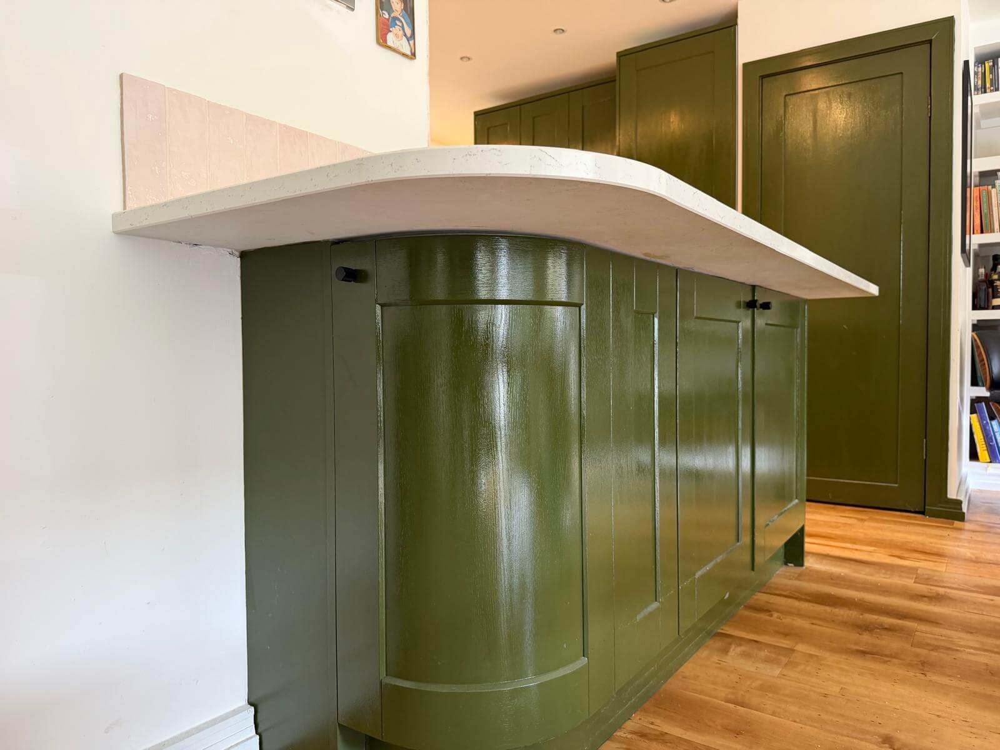
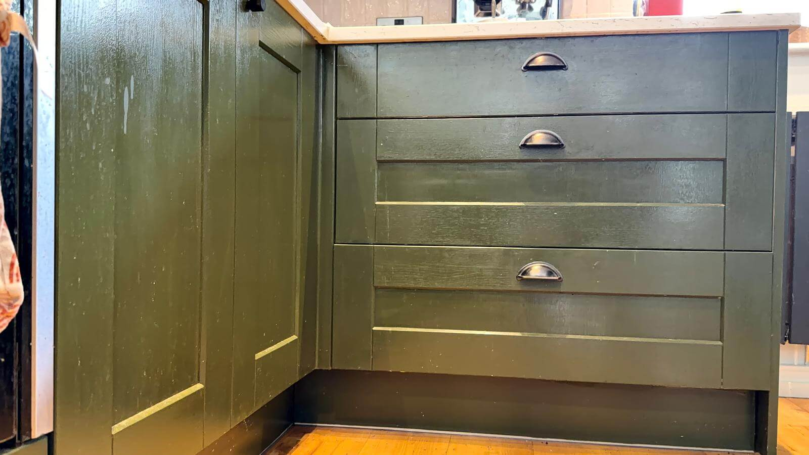
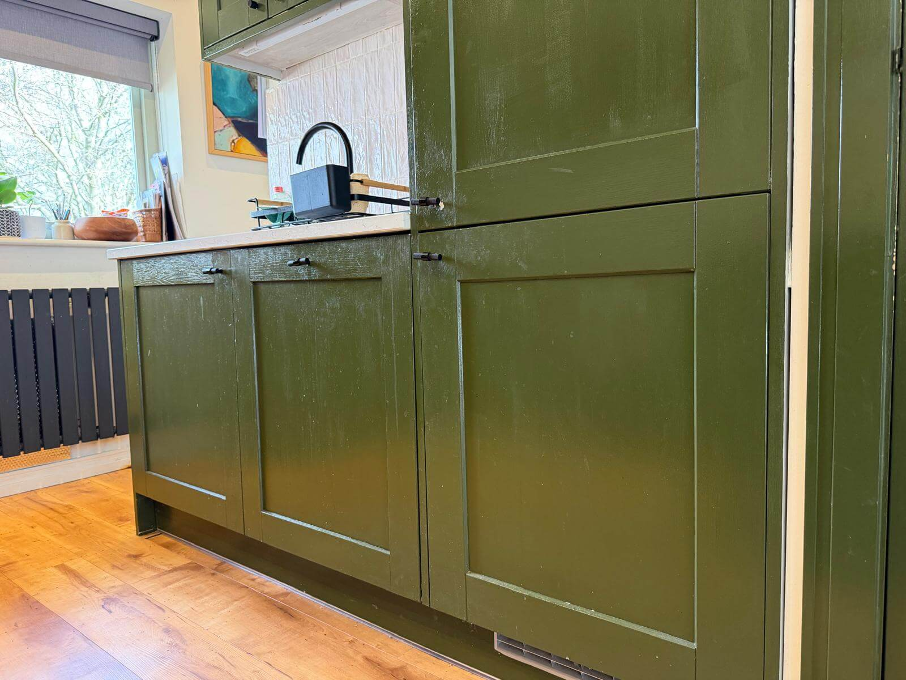
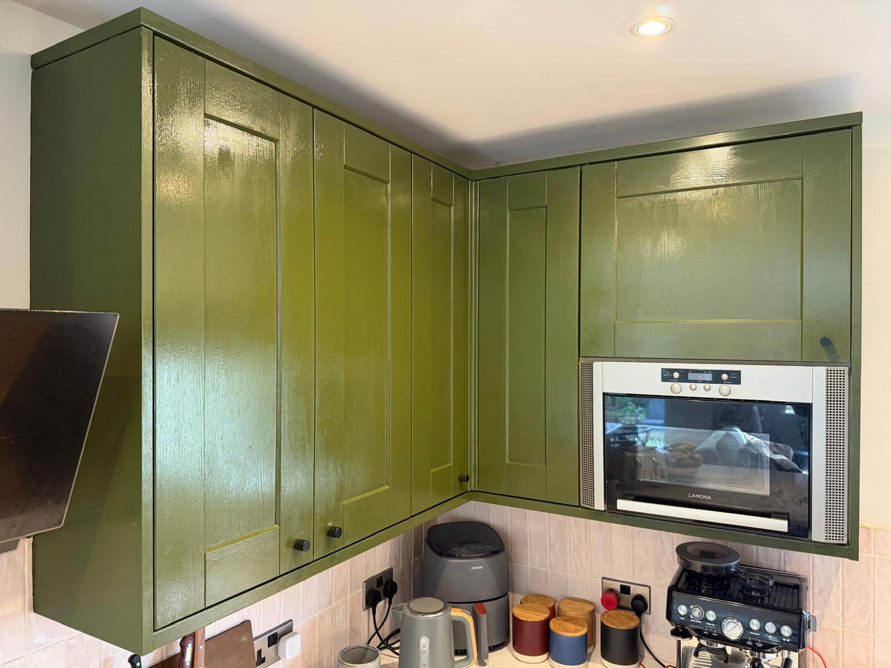
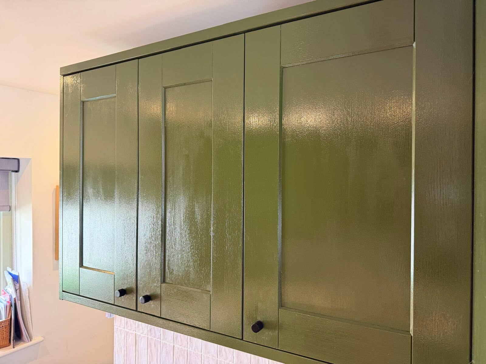
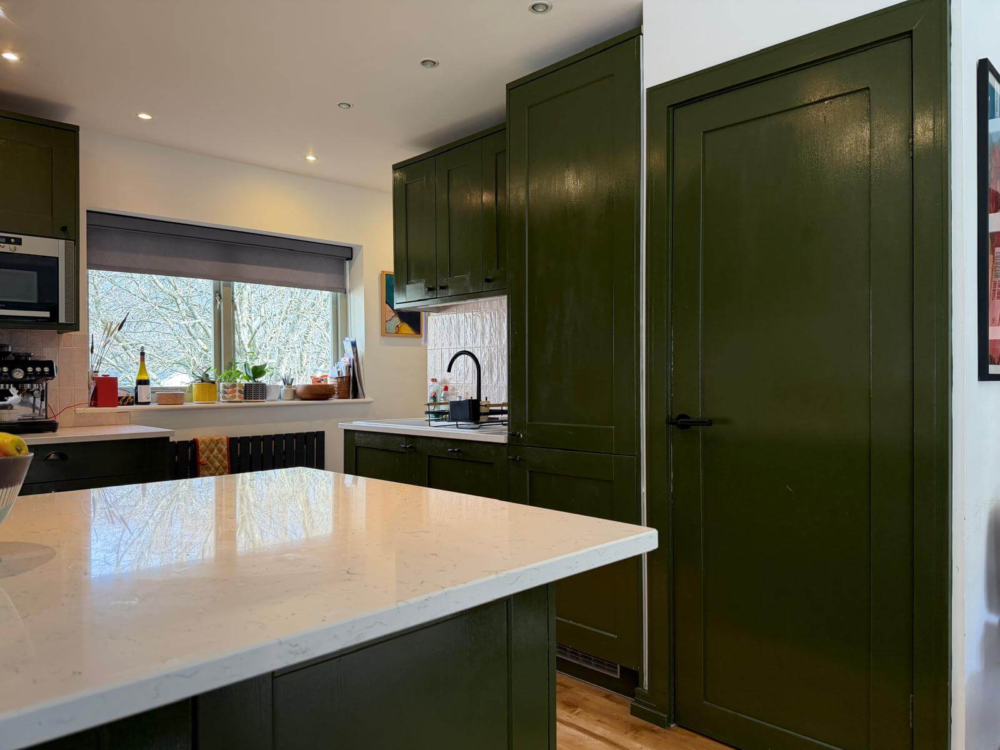
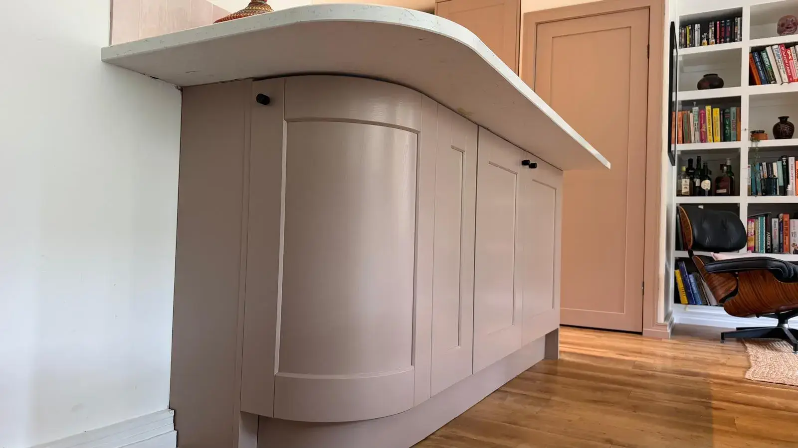
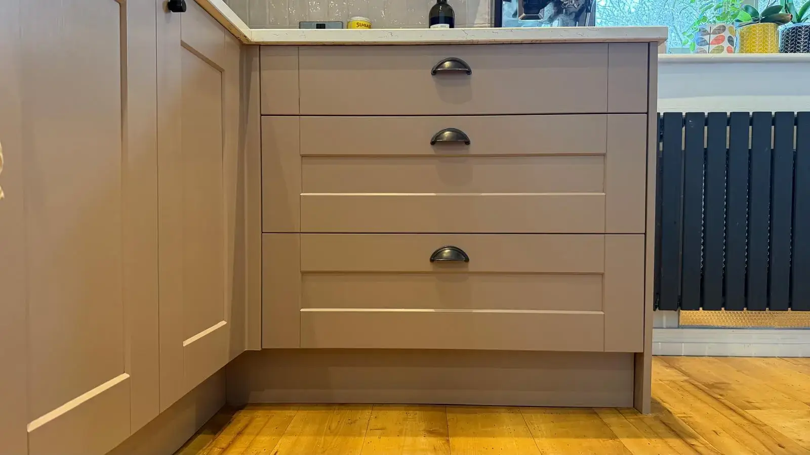
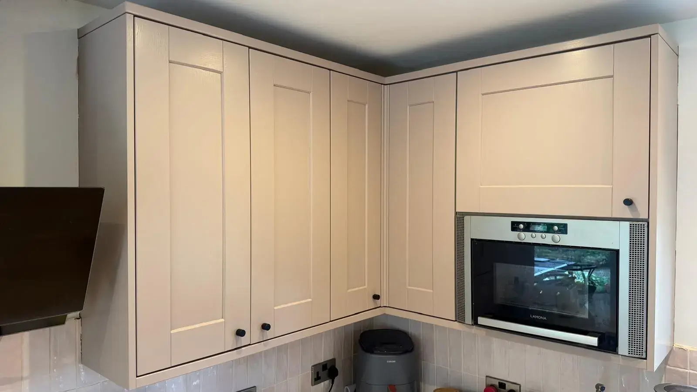
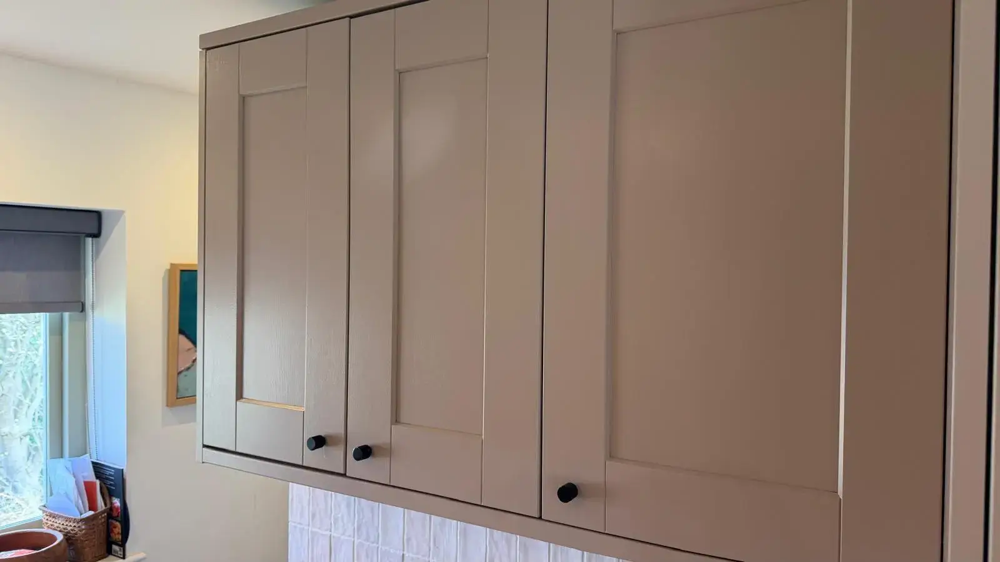
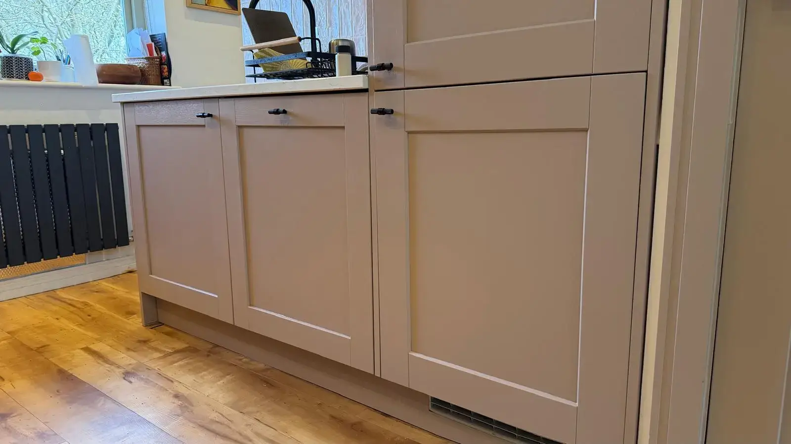
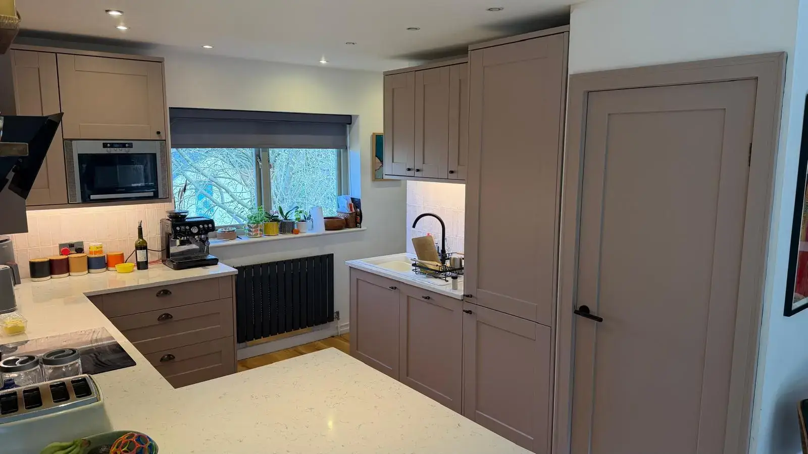
If your kitchen has been previously painted or is starting to show wear, a professional respray can completely transform it — at a fraction of the cost of replacing it. We serve Ilkley and all surrounding areas in Yorkshire.
Get Your Free Quote